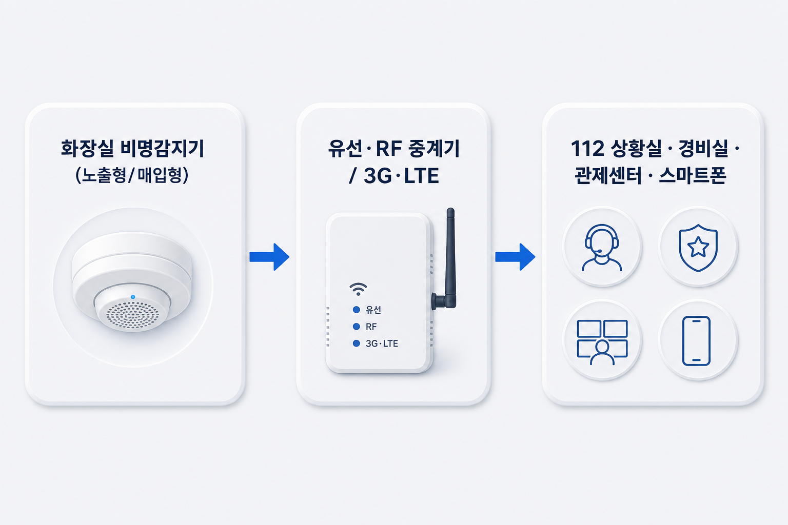

워치독 WatchDog · WD 시리즈
화장실 비명인식기
승강기용 워치독과 동일한 비명인식 기술입니다. 노출형·매입형(다운라이트형)으로 설치하며, 화장실 내 대화는 녹음·전송되지 않고 비명 발생 시에만 경보합니다. (3G/LTE 모델 제외 별도 이용료 없음)
도입 문의개발 배경
공공 화장실은 개인정보보호법상 CCTV 설치가 불가능한 안전 사각지대입니다. 몰카·성범죄·폭행 등 여성·아동 대상 강력범죄가 빈번하며, 기존 비상벨은 제압당하거나 당황한 상황에서 버튼을 누르기 어렵습니다.
워치독은 "사람살려", "아악", "강도야" 등 비명만으로 위급 상황을 즉시 인지하여 경광등·경고방송을 울리고 112·경비실로 자동 호출합니다.
시스템 구성
화장실 비명감지기(노출형/매입형) → 유선·RF 중계기 또는 3G/LTE → 112 상황실 · 경비실 · 관제센터 · 스마트폰

제품 유형
노출형
천정·벽면 표면 부착, 원통형 디자인
매입형
다운라이트 홀 규격 매립, 미관 우수
유·무선 연동
접점식 유선 / RF 무선 / 3G·LTE 직접 연동
동작 흐름
1
비명 대기
365일 24시간
2
AI 판별
비명 vs 일상소음
3
경광등·방송
범행 억제
4
비상호출
유선·무선 전파
5
출동·대응
음성통화·긴급출동
제품 특징
딥러닝 AI
일상소음과 비명 정밀 구분
고성능 CPU
내장형 CPU로 안정적 실시간 처리
간편 설치
매입형 다운라이트 홀 규격 호환
탬퍼 스위치
강제 해체 시 즉시 비상통보
적용 사례
부산대학교
여자화장실 400개소
여의도 파크원
217개소 설치
서울고속터미널
주차장·파미에스테이션
기술 사양
| 제품군 | 워치독 WatchDog (승강기용과 동일 기술) |
|---|---|
| 적용기술 | 딥러닝, 멀티트리거, 실시간 고속인식 |
| 인식방식 | 음원인식 — 여성·아동 음성 최적화 |
| 마이크 | 2 MIC (DIGITAL) |
| 인식 단어 | 아악, 꺄악, 강도야, 사람살려, 도와주세요 |
| 프라이버시 | 녹음·감청 없음, 소리 패턴만 분석 |
| 설치장소 | 화장실, 탈의실, 독서실 등 |
※ 승강기 비명감지기와 동일 워치독 제품군입니다. 세대 현관용은 비명인식 일괄소등스위치를 참고하세요.